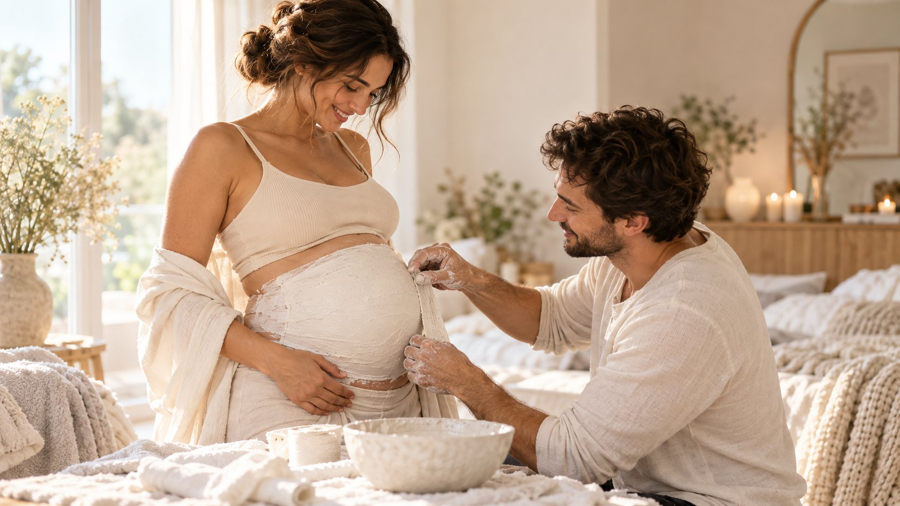

Zu schön für den Keller. Zu wertvoll zum Vergessen.
Wir verwandeln deinen Babybauch-Abdruck in ein einzigartiges Erinnerungsstück.
Eine Schwangerschaft vergeht.
Die Erinnerung daran darf bleiben.

Symbolbild (KI)


Kennst du das?
Während deiner Schwangerschaft hast du deinen Babybauch verewigt. Damals war dieser Abdruck etwas ganz Besonderes.
Irgendwann stand er dann im Schlafzimmer, oben auf dem Schrank – oder ist leise in den Keller gewandert.
Dabei ist diese Erinnerung viel zu wertvoll, um vergessen zu werden.
Genau dort beginnt unsere Arbeit.


Unsere Idee
Aus Liebe zum Gestalten entstand die Idee, vorhandenen Schwangerschaftsabdrücken ein zweites Leben zu schenken.
Jeder Bauch erzählt eine andere Geschichte.
Deshalb gibt es bei uns keine Gestaltung von der Stange. Farben, Materialien, Blumen und Details stimmen wir ganz auf dich, deinen Abdruck und dein Zuhause ab.
Wir sind keine große Firma, sondern ein kleines kreatives Atelier in Crailsheim. Jedes Stück geht durch unsere Hände – mit Zeit, Ruhe und viel Sorgfalt.
Drei Erinnerungen. Drei ganz unterschiedliche Geschichten.
Das sind echte Fotos unserer bisherigen Arbeiten. Tippe auf ein Bild, um es groß zu sehen.
-
Strukturdesign mit Weiß- und Goldakzenten
-
Natürliches Design mit Trockenblumen
-
Florales Design mit weißen Blüten und Gold
Gestaltungsideen zum Träumen
Diese Bilder sind mit KI erstellte Visualisierungen. Sie zeigen mögliche Richtungen für deine Gestaltung, sind aber keine fertigen Arbeiten von uns.
Erdtöne, Pampasgras und Gold
Mit indirekter Beleuchtung
Goldene Ornamente und Blütenranken
Seitlicher Strauß mit Beige-Akzent
Mond, Sterne und Perlen
Eukalyptus, Lilien und Blattgold
Zartes Rosé mit Rosen
Orchideen, Hortensien und Blattgold
Pampasgras und Trockenblumen
Fließende Struktur mit Goldfläche
Was alles möglich ist
Fast jeder Wunsch ist möglich. Gemeinsam schauen wir, was zu deinem Abdruck und deinem Zuhause passt.
Selbst ausprobieren
Farben & Goldakzente
Weiß, Creme, Beige, Champagner oder ein Hauch Rosé – mit Blattgold oder feinen goldenen Linien.
Blumen & Trockenblumen
Frische Optik mit künstlichen Blüten oder natürlich mit Trockenblumen, Gräsern und Eukalyptus.
Namen & Geburtsdaten
Der Name deines Kindes, das Geburtsdatum, Uhrzeit oder Gewicht – dezent eingearbeitet.
Schriftzüge
Ein Satz, der euch begleitet, oder ein Wort, das alles sagt – in Gold oder Ton in Ton.
Besondere Strukturen
Fließende Stoffoptik, plastische Falten und Oberflächen, die man anfassen möchte.
Persönliche Erinnerungsstücke
Ein Schnuller, das erste Armband aus dem Krankenhaus oder Blüten aus deinem Brautstrauß.
Beleuchtung
Auf Wunsch mit indirektem, warmem Licht – ein ruhiger Blickfang am Abend.
Individuelle Sonderwünsche
Du hast eine ganz eigene Idee? Erzähl sie uns – wir überlegen gemeinsam, wie sie Form annimmt.
Gestalte deinen eigenen Entwurf
Probier aus, was dir gefällt – Farbe, Akzente, Blumen und euer Name. Deinen Entwurf kannst du anschließend direkt mit deiner Anfrage schicken.
3D-Vorschau: zum Drehen ziehen oder wischen
Grundfarbe
Akzente
Struktur
Stoffband über dem Bauch
Blumen
Extras
Vereinfachte Vorschau zur Orientierung. Dein Erinnerungsstück entsteht von Hand und wird individuell auf deinen Abdruck abgestimmt.
So funktioniert es
Fünf ruhige Schritte – ohne Verpflichtung, bis alles für dich passt.
Du schickst uns eine Anfrage
Ganz einfach über unser Anfrageformular – in wenigen Minuten erledigt.
Du erzählst uns von deinem Abdruck
In unserem kurzen Wunschformular kannst du uns auch gleich Fotos deines Babybauch-Abdrucks zeigen.
Wir besprechen deine Wünsche
Danach erstellen wir einen persönlichen Gestaltungsvorschlag für dich.
Du erhältst ein transparentes Angebot
Individuell und nachvollziehbar – passend zu Größe, Material und Aufwand.
Erst wenn alles passt, beginnen wir
Die Gestaltung startet erst, wenn du dich wirklich wohl damit fühlst.
Kein Abdruck gleicht dem anderen – deshalb erhältst du bei uns kein Standardprodukt, sondern ein individuelles Angebot.
Was kostet die Gestaltung?
Jeder Babybauch-Abdruck ist anders. Größe, Zustand, gewünschte Materialien, Blumen, Verzierungen und Arbeitsaufwand unterscheiden sich teilweise deutlich.
Deshalb erhältst du nach deiner Anfrage ein persönliches und unverbindliches Angebot. Du entscheidest erst danach, ob du deinen Abdruck von uns gestalten lassen möchtest.
Einfache Gestaltungen sind günstiger als sehr aufwendige florale oder dreidimensionale Arbeiten.
Unverbindliches Angebot anfragenDeine Erinnerung soll sicher bei uns ankommen – und wieder zu dir zurück.
Bei größeren oder besonders empfindlichen Kunstwerken organisieren wir auf Wunsch einen geeigneten Versand bzw. Speditionsversand.
Die Versandkosten richten sich nach Größe, Entfernung und notwendiger Verpackung und werden immer vorab mitgeteilt.
Wir unterstützen dich auch dabei, deinen vorhandenen Abdruck für den Weg zu uns transportsicher zu verpacken.

Erzähl uns von deiner Erinnerung
Das Formular dauert nur ein paar Minuten. Alle Angaben sind unverbindlich – wir melden uns persönlich bei dir.
Deine Angaben landen direkt und vertraulich bei uns – nicht öffentlich, ohne Umwege.
Du möchtest uns lieber direkt schreiben?
Über WhatsApp Kontakt aufnehmenDanke 🤍
Deine Erinnerung ist bei uns in guten Händen.
Wir schauen uns deine Angaben an und melden uns persönlich bei dir.
Fotos nachreichen oder Fragen? Schreib uns auf WhatsApp
Demo-Modus: Diese Anfrage wurde nicht versendet. Formular-Anbindung in script.js einrichten (siehe README.txt).
Häufige Fragen
Mein Abdruck ist beschädigt. Könnt ihr trotzdem etwas daraus machen?
In vielen Fällen ja. Risse, abgebrochene Ränder oder Verfärbungen lassen sich oft ausbessern oder geschickt in die Gestaltung einbeziehen. Schick uns einfach Fotos – dann können wir zunächst einschätzen, was möglich ist.
Muss mein Abdruck komplett fertig sein?
Nein. Es reicht, wenn der Gipsabdruck selbst vorhanden und durchgetrocknet ist. Glätten, Grundieren und alles Weitere übernehmen wir gerne. Ist dein Abdruck noch nicht fertig, sprich uns an – wir beraten dich.
Kann ich euch eigene Blumen oder Dekorationen schicken?
Sehr gerne. Ob Blüten aus deinem Brautstrauß, ein Schnuller oder ein kleines Armband – persönliche Stücke machen dein Erinnerungsstück noch besonderer. Bei frischen Blumen klären wir vorab, wie sie haltbar gemacht werden können.
Könnt ihr einen Namen oder ein Geburtsdatum integrieren?
Ja. Namen, Geburtsdaten, Uhrzeit, Gewicht oder ein persönlicher Schriftzug lassen sich dezent oder als Blickfang einarbeiten – in Gold oder Ton in Ton.
Wie lange dauert die Gestaltung?
Die Dauer hängt von Aufwand, Material und Auftragslage ab und wird vor Auftragserteilung mit dir besprochen.
Kann mein Abdruck verschickt werden?
Ja, deutschlandweit. Wir prüfen den Versand individuell, helfen dir beim sicheren Verpacken und nennen dir die Kosten immer vorab.
Was passiert, wenn mein Abdruck sehr groß ist?
Auch große Abdrücke von etwa 140 × 120 cm sind möglich. Hier organisieren wir auf Wunsch einen geeigneten Versand bzw. eine Spedition oder vereinbaren eine Abholung in der Region.
Kann ich euch einfach erst einmal Bilder schicken?
Natürlich. Im Anfrageformular kannst du Fotos deines Abdrucks hochladen – ganz unverbindlich.
Muss ich sofort etwas bezahlen?
Nein. Nach deiner Anfrage erhältst du zunächst ein individuelles Angebot. Erst wenn alles für dich passt, beginnt die Gestaltung.
Manche Erinnerungen verdienen einen besonderen Platz.
Vielleicht wartet dein Babybauch-Abdruck schon viel zu lange darauf.
Jetzt unverbindlich anfragenSymbolbild (KI)